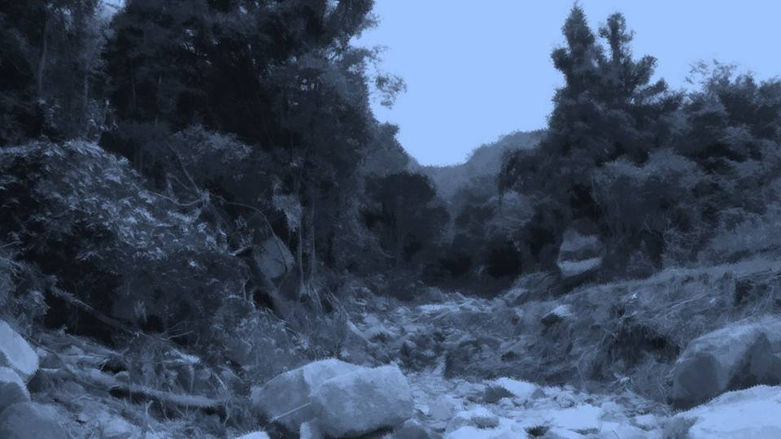
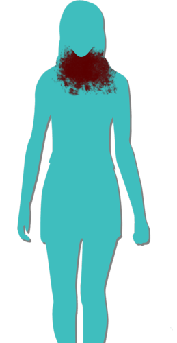
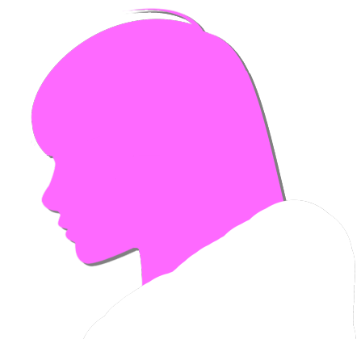
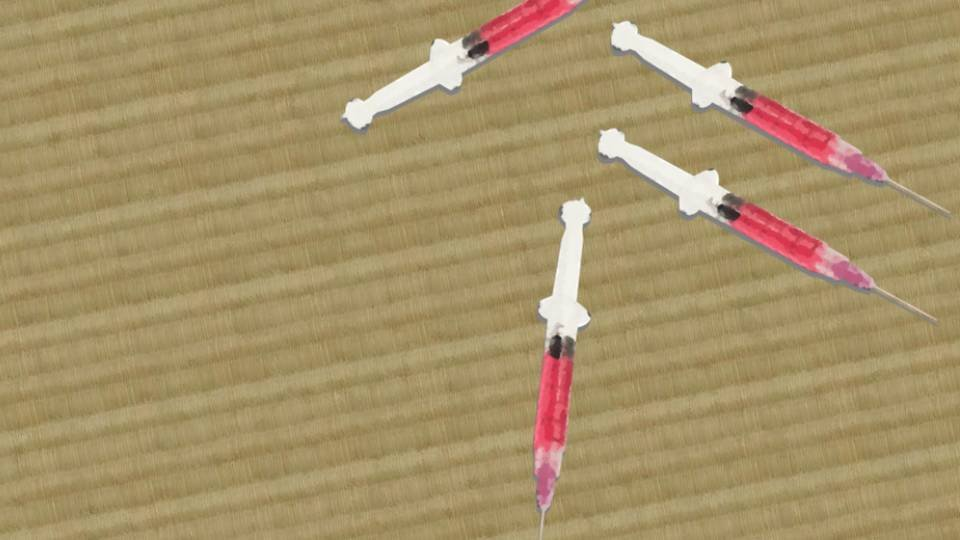

This scene is not unlocked yet in your progress
屋梁落月～代替～

先ほどとは心構えが違う。
私にはやるべきことがある。
伝えないといけない。
死月妖花が何を考えているのか――。
私にはやるべきことがある。
伝えないといけない。
死月妖花が何を考えているのか――。
このままでは、私たちは間違いなく死月妖花の餌食になる。
特に、死月妖花の正体を知っている元木町組とチガ姉、夏菜は危険だ。
私だって、この道を戻ることがどれほど危険か承知している。
でも、私は誰1人死んでほしくない……！
1人だけ生き残ったって、私は……！
特に、死月妖花の正体を知っている元木町組とチガ姉、夏菜は危険だ。
私だって、この道を戻ることがどれほど危険か承知している。
でも、私は誰1人死んでほしくない……！
1人だけ生き残ったって、私は……！
戻ったら、お母さんに怒られるだろうか。
そんなことちっとも恐れていない。
みんなが消えてしまう方が、よっぽど怖い。
もし怒られたら、お母さんに怒鳴り返すまでだ。
私のしていることは正しい――私の利己的な正義は、きっと正しい。
そんなことちっとも恐れていない。
みんなが消えてしまう方が、よっぽど怖い。
もし怒られたら、お母さんに怒鳴り返すまでだ。
私のしていることは正しい――私の利己的な正義は、きっと正しい。
「ん？」
あの土砂崩れのあった場所に着くと、ずっと向こうに、人影が見える。
あの土砂崩れのあった場所に着くと、ずっと向こうに、人影が見える。

念のため、姿を隠す。
もしチガ姉だったら、また面倒をかけてしまう。
というか、また投げ飛ばされるのも嫌だし……。
もしチガ姉だったら、また面倒をかけてしまう。
というか、また投げ飛ばされるのも嫌だし……。



あれは、お母さんとなつみ、そして夏菜か……。
五島はどうしたんだ？ 一緒じゃないのか？
まだ蔵で本を読んでいるのだろうか。
あの様子だと、チガ姉がなつみと夏菜をここへ誘導したのだろう。
ならば、じきに五島もここに来るはずだ。
五島はどうしたんだ？ 一緒じゃないのか？
まだ蔵で本を読んでいるのだろうか。
あの様子だと、チガ姉がなつみと夏菜をここへ誘導したのだろう。
ならば、じきに五島もここに来るはずだ。
うまくいけば、全員でこの山道から脱出できるかもしれない。
なつみに無理やり目隠しと耳栓でもしなくてはならないけど……。
やっぱり、こういう時、なつみが死月妖花に監視されているというのがネックだ。
なつみに無理やり目隠しと耳栓でもしなくてはならないけど……。
やっぱり、こういう時、なつみが死月妖花に監視されているというのがネックだ。
3人は予想通り、分かれ道で廃屋のある方を選んだ。
さて、どうするべきだろうか。
さっきサクラさんが言っていた通りなら、死体がうろついていることになる。
しかも、今度はサクラさんも敵対するとも言っていたのだ。
さて、どうするべきだろうか。
さっきサクラさんが言っていた通りなら、死体がうろついていることになる。
しかも、今度はサクラさんも敵対するとも言っていたのだ。
私たち元木町組とチガ姉、夏菜は真っ先に死月妖花のターゲットになる。
仮に死体がうろついていたら、絶対に見つかってはいけない。
死体に見つかるということは、死月妖花に見つかるのと同じだ。
仮に死体がうろついていたら、絶対に見つかってはいけない。
死体に見つかるということは、死月妖花に見つかるのと同じだ。
もし見つかったらどうなるのだろうか。
死体たちが襲ってくるのだろうか。
それとも、足元から桜を急に生やすなんて物理攻撃でも仕掛けてくるのだろうか。
死体たちが襲ってくるのだろうか。
それとも、足元から桜を急に生やすなんて物理攻撃でも仕掛けてくるのだろうか。
まあ、いずれにしてもろくなことにはならない。
少なくとも、毎年1人ずつ、誰にもばれずに殺すようなやつなんだ。
私たちを殺すなんて、造作もないことだろう。
やっぱり、なつみにサクラさんの言葉を聞かせるわけにはいかない。
少なくとも、毎年1人ずつ、誰にもばれずに殺すようなやつなんだ。
私たちを殺すなんて、造作もないことだろう。
やっぱり、なつみにサクラさんの言葉を聞かせるわけにはいかない。
サクラさんの言葉で重要なのは2点、
・元木町組とチガ姉、夏菜は最重要ターゲット
・死月妖花は死体の修復時に隙を見せる
つまり、死月妖花の隙を見て、急いで荒田から脱出しなくてはならない。
・元木町組とチガ姉、夏菜は最重要ターゲット
・死月妖花は死体の修復時に隙を見せる
つまり、死月妖花の隙を見て、急いで荒田から脱出しなくてはならない。
しかし問題が2つある。
死月妖花が隙を見せるタイミングが分からない。
それと、どうやってなつみとチガ姉を脱出させるかだ。
あの2人はどこまで逃げても逃げ切れるものではない。
死月妖花が隙を見せるタイミングが分からない。
それと、どうやってなつみとチガ姉を脱出させるかだ。
あの2人はどこまで逃げても逃げ切れるものではない。
なぜなら、なつみやチガ姉の危険予知は、例え元木町でも東京でも働く。
つまり、桜のあるところなら死月妖花の目は届くと言えるだろう。
荒田集落から逃げ出すだけでは不十分――桜のないところへ行くまで、2人の身の安全は確保されない。
でも私たちを殺すなら、人目の少ない荒田の方がやりやすいだろう。
つまり、桜のあるところなら死月妖花の目は届くと言えるだろう。
荒田集落から逃げ出すだけでは不十分――桜のないところへ行くまで、2人の身の安全は確保されない。
でも私たちを殺すなら、人目の少ない荒田の方がやりやすいだろう。
何とかして、なつみとチガ姉の直感を無効化できないだろうか。
もし五島がまだ蔵にいるなら、その方法に行きついているかもしれないが……。
もし五島がまだ蔵にいるなら、その方法に行きついているかもしれないが……。
いや……ちょっと待てよ……？
チガ姉は確か、10年前にサクラさんを殺したくなる症状があったって言ってたよな。
五島の話では、翠眼呪殺ってやつらしいが……。
どうしてそれは治ったんだ？
チガ姉は確か、10年前にサクラさんを殺したくなる症状があったって言ってたよな。
五島の話では、翠眼呪殺ってやつらしいが……。
どうしてそれは治ったんだ？
翠眼呪殺ってのは確か、緑の目の女が初潮を迎えると、予知能力を持ったやつを殺したくなるってことだよな。
でも、チガ姉の予知能力も緑の目も、ずっと消えずにそのまま。
と言うことは……。
でも、チガ姉の予知能力も緑の目も、ずっと消えずにそのまま。
と言うことは……。
くそ！ サクラさんに肝心なことを聞いていなかった！
どうしてチガ姉の殺意は消えたのか、サクラさんは絶対に知っているはずだ！
なぜなら、チガ姉ではなく、サクラさんの予知能力を消してチガ姉の殺意を消した可能性があるからだ！
どうしてチガ姉の殺意は消えたのか、サクラさんは絶対に知っているはずだ！
なぜなら、チガ姉ではなく、サクラさんの予知能力を消してチガ姉の殺意を消した可能性があるからだ！
サクラさんはまだ、さっきの 庇 にいるだろうか。
まだ私の味方でいてくれるだろうか。
もし敵だったら、私は殺されるかもしれない。
でもそれが分からなきゃ、なつみとチガ姉はもう2度とここから出られないんだよ……！
まだ私の味方でいてくれるだろうか。
もし敵だったら、私は殺されるかもしれない。
でもそれが分からなきゃ、なつみとチガ姉はもう2度とここから出られないんだよ……！
サクラさんの方に戻るか、それとも五島が既に予知能力を無効化する方法を知っていることに賭けるか――。
確実に解決方法を知っているのはサクラさんの方だ。
でも、確実に安全が確保されるのは五島の方……。
サクラさんのところに戻るにはあまりにも危険。
これは選択の余地はないな……。
確実に解決方法を知っているのはサクラさんの方だ。
でも、確実に安全が確保されるのは五島の方……。
サクラさんのところに戻るにはあまりにも危険。
これは選択の余地はないな……。

私は急いで集落へ足を向ける。
サクラさんは死月妖花に見つかるのも時間の問題だと言っていた。
今度サクラさんに会う＝死月妖花に見つかるのと同義だ。
すなわち、死月妖花に殺されることになる。
それだけじゃない。いったいどれほどの死体がここを歩き回っているのかも分からない。
サクラさんは死月妖花に見つかるのも時間の問題だと言っていた。
今度サクラさんに会う＝死月妖花に見つかるのと同義だ。
すなわち、死月妖花に殺されることになる。
それだけじゃない。いったいどれほどの死体がここを歩き回っているのかも分からない。

渓流沿いの崖を登り切り、墓地広場に踏み入れる。
少なくとも、サクラさんのほかにお父さんの死体がいるらしい。
死体が2人だけとは限らない。
もしかしたらこの2人だけかもしれないし、100人歩き回っているのかもしれない。
少なくとも、サクラさんのほかにお父さんの死体がいるらしい。
死体が2人だけとは限らない。
もしかしたらこの2人だけかもしれないし、100人歩き回っているのかもしれない。
いや、でも待てよ……？
全力で動かしていた足を制し、すぐに徒歩に変える。
全力で動かしていた足を制し、すぐに徒歩に変える。

あのうっそうとしていたはずの木々は、相変わらず恥ずかしそうに、そのあらわになった幹をさらしている。
もし死体に見つかった時点――
死月妖花に見つかった時点で殺されているなら、さっき廃屋に向かった3人だってすでに殺されているはずだ。
なぜなら、なつみは常に監視されているからだ。
でも、何事もなかったかのように廃屋へ向かって行った。
私たちを見つけたからと言ってすぐに殺すわけではないようだ。
なぜなら、なつみは常に監視されているからだ。
でも、何事もなかったかのように廃屋へ向かって行った。
私たちを見つけたからと言ってすぐに殺すわけではないようだ。
「ん！？」
正面から人影が見える。
枯れてしまった木の陰に身を隠す。
死体だったら、間違いなく命の危険にさらされる。
しかし、こんなので隠れ切れるだろうか。
これほどまぶしい月明かりでは、山に慣れていない私でもすぐに見つけられるほどに、ずさんなかくれんぼだ。
正面から人影が見える。
枯れてしまった木の陰に身を隠す。
死体だったら、間違いなく命の危険にさらされる。
しかし、こんなので隠れ切れるだろうか。
これほどまぶしい月明かりでは、山に慣れていない私でもすぐに見つけられるほどに、ずさんなかくれんぼだ。
でも必死に身を隠す必要はなかったかもしれない。
その人影は、見覚えがある。
その人影は、見覚えがある。

「春花か！？」
「やっぱりばあちゃん！」
ばあちゃんがこの森を1人で歩いている。
他に誰も一緒じゃないのか……？
「やっぱりばあちゃん！」
ばあちゃんがこの森を1人で歩いている。
他に誰も一緒じゃないのか……？

「春花、美冬さんはどうしたんだい！？」
「ばあちゃん！ そんなことより大変なんだ！ 早くしないと私たちは……！」
「春花、事態は分かっている。さっき絵梨奈ちゃんと話をして、何が起こっているかようやく分かったんだ。 早く夏菜を連れてこなくてはならない」
「夏菜を……？」
「ばあちゃん！ そんなことより大変なんだ！ 早くしないと私たちは……！」
「春花、事態は分かっている。さっき絵梨奈ちゃんと話をして、何が起こっているかようやく分かったんだ。 早く夏菜を連れてこなくてはならない」
「夏菜を……？」
「夏菜は、死月妖花を滅ぼす力を持った唯一の人間だ。
緑の目を持った女だけが、死月妖花を滅する力を持っている」
「だったらチガ姉はどうなんだ！？ チガ姉も一緒の方がいいよな！？」
「茅萱はもう、翠眼じゃない……」
「え……？」
「だったらチガ姉はどうなんだ！？ チガ姉も一緒の方がいいよな！？」
「茅萱はもう、翠眼じゃない……」
「え……？」
私が集落から離れている間に、何があったのだろう。
チガ姉は翠眼じゃなくなり、夏菜が死月妖花を滅する存在……？
理解しがたい新しい出来事と情報が錯綜しているが、ばあちゃんが嘘を言う意味もない。
五島も交えて話をしたみたいだし。
チガ姉は翠眼じゃなくなり、夏菜が死月妖花を滅する存在……？
理解しがたい新しい出来事と情報が錯綜しているが、ばあちゃんが嘘を言う意味もない。
五島も交えて話をしたみたいだし。
「ばあちゃんはどうしてこんなところにいるんだ？」
「夏菜が廃屋にいると聞いてね。 絵梨奈ちゃんは集落に帰らせて、茅萱は死月妖花のところへ向かっている。 地下の洞窟に死月妖花に通じる道があるんだ。 後続隊がスムーズに通れるように、その道を調べながら進んでいるはずだ」
なるほど、私たちが生き残るためには2通りの方法がある。
「夏菜が廃屋にいると聞いてね。 絵梨奈ちゃんは集落に帰らせて、茅萱は死月妖花のところへ向かっている。 地下の洞窟に死月妖花に通じる道があるんだ。 後続隊がスムーズに通れるように、その道を調べながら進んでいるはずだ」
なるほど、私たちが生き残るためには2通りの方法がある。
1つはなつみとチガ姉の直感を無効化し、隙を見て脱出する。
もう1つは死月妖花そのものを倒すこと。
ばあちゃんは死月妖花を倒す方を選んでいるようだ。
そしてチガ姉はその準備をするために死月妖花のところへ向かっている。
もう1つは死月妖花そのものを倒すこと。
ばあちゃんは死月妖花を倒す方を選んでいるようだ。
そしてチガ姉はその準備をするために死月妖花のところへ向かっている。
「なあ、だったらなつみの予知能力も治せるんじゃないのか！？ どうやってチガ姉を治したんだ！？」
「そうか、春花にはまだ話してなかったか。 でもね、そんなに甘くはないんだよ。 まあ、歩きながら話そう。廃屋に夏菜がいるんだろ？」
「そうか、春花にはまだ話してなかったか。 でもね、そんなに甘くはないんだよ。 まあ、歩きながら話そう。廃屋に夏菜がいるんだろ？」

私はもと来た道を戻り、廃屋へ向かう。
ばあちゃんから聞いたのは、ファルシフィカソの効果のことだった。
ドローガを無効化する性質があるらしく、10年前、サクラさんに投与することでチガ姉の発狂が治まったらしい。
ちょうどその頃、お母さんは女ケ沢で私をいじめていた同級生を殺そうとしていた。
ドローガを無効化する性質があるらしく、10年前、サクラさんに投与することでチガ姉の発狂が治まったらしい。
ちょうどその頃、お母さんは女ケ沢で私をいじめていた同級生を殺そうとしていた。

なつみの両親を脅迫してアリバイ工作し、ドローガを使って完全犯罪を目論んでいた。
しかし、ドローガはあくまでお母さんを行動させるための餌で、本当はサクラさんたちはファルシフィカソの方を使わせたかった。
結局、古郡家の説得により、殺人は行われなかった。
だからサクラさんは一か八か、自分にファルシフィカソを使い、結果チガ姉には何の処置も施されないまま発狂は治まった。
しかし、ドローガはあくまでお母さんを行動させるための餌で、本当はサクラさんたちはファルシフィカソの方を使わせたかった。
結局、古郡家の説得により、殺人は行われなかった。
だからサクラさんは一か八か、自分にファルシフィカソを使い、結果チガ姉には何の処置も施されないまま発狂は治まった。

「なあばあちゃん、もう話してくれてもいいだろ？ サクラさんが自殺した件についてさ……」
やっぱりばあちゃんと幸太郎さんの行動が不可解だ。
サクラさんが自殺した理由はまだ分かる。
なぜ幸太郎さんはサクラさんの首を切ったんだ……？
やっぱりばあちゃんと幸太郎さんの行動が不可解だ。
サクラさんが自殺した理由はまだ分かる。
なぜ幸太郎さんはサクラさんの首を切ったんだ……？
「幸太郎は、私がサクラを突き落としたと思っている。
後は……分かるだろ？」
「ばあちゃんが殺したとみんなに思わせないようにするためだろ？」
「幸太郎はそう言っていたよ。私がサクラの亡骸を見た時には、もう首が切り落とされていた」
「…………」
「ばあちゃんが殺したとみんなに思わせないようにするためだろ？」
「幸太郎はそう言っていたよ。私がサクラの亡骸を見た時には、もう首が切り落とされていた」
「…………」


さっき会ったサクラさん――
サクラさんは自分の存在も、死体であることも隠そうとしなかった。
生者となんら変わりのない姿と、生前のままの雰囲気や仕草。
もちろん、首を切り落とした痕なんて残っていなかった。
あれでも崖から落ちた挙句、首を切られたんだよな……。
生者となんら変わりのない姿と、生前のままの雰囲気や仕草。
もちろん、首を切り落とした痕なんて残っていなかった。
あれでも崖から落ちた挙句、首を切られたんだよな……。
でも……やっぱりちょっと変だ。
ばあちゃんはサクラさんの腕を崖のギリギリでつかみ、何とか引き上げようとしていたんだ。
それがどうすれば突き落としたように見えるんだ？
ばあちゃんはサクラさんの腕を崖のギリギリでつかみ、何とか引き上げようとしていたんだ。
それがどうすれば突き落としたように見えるんだ？
「なあ、ばあちゃんはサクラさんを突き落としたわけじゃないよな？」
「…………
「…………

いや、結局私は助けられなかった。
私が殺したと言っても――」
「いや、そうじゃなくてさ、助けようとしたんだよな？」
「まあね、私は全力で助けようとしたが……」
「いや、そうじゃなくてさ、助けようとしたんだよな？」
「まあね、私は全力で助けようとしたが……」
やっぱり、変だ。
ばあちゃんの腕にしがみつくサクラさんを振り払いでもしない限りは、意図的に突き落としたとは言えない。
と言うか、突き落としたなんて言い回しも変だ。
そもそも、ばあちゃんがサクラさんを突き落すなんてことも、動機として変だ。
うまく言えないけど、色々と変だ。
ばあちゃんの腕にしがみつくサクラさんを振り払いでもしない限りは、意図的に突き落としたとは言えない。
と言うか、突き落としたなんて言い回しも変だ。
そもそも、ばあちゃんがサクラさんを突き落すなんてことも、動機として変だ。
うまく言えないけど、色々と変だ。
だけど、私には1つだけ心当たりがある。
これは私だけに分かること―― さっき、サクラさんに会うなんてあり得ない体験をしたから理解できることだ。
これは私だけに分かること―― さっき、サクラさんに会うなんてあり得ない体験をしたから理解できることだ。
「ばあちゃん、もしかしてサクラさんの首を切ったのって……」
と、ばあちゃんが足を止めた。
うつむいたまま、何かを察したように、口元が固く歪む。
と、ばあちゃんが足を止めた。
うつむいたまま、何かを察したように、口元が固く歪む。
「春花……。
この荒田集落は、10年前から――
サクラが死んだ時から……
いや、ずっと昔から得体の知れない者に乗っ取られていたのかもね」
「やっぱり、サクラさんの首を切ったのは……」
「きっと…… 栄一郎の方だ。 死月妖花の意思に従い、この集落に呪いの噂を広めるために」
「そういうことか……。ばあちゃん、気づいてたのか？」
「やっぱり、サクラさんの首を切ったのは……」
「きっと…… 栄一郎の方だ。 死月妖花の意思に従い、この集落に呪いの噂を広めるために」
「そういうことか……。ばあちゃん、気づいてたのか？」
「気づいたのは、さっき絵梨奈ちゃんと話した時だ。
死月妖花の存在、そして死月妖花の目的を知った時に、ようやくつながった」
「なるほどな、いくら幸太郎さんを調べたって、証拠が出てこないわけだ。 なあ、その時のお父さんって、どんな姿をしていたんだ？」
「なるほどな、いくら幸太郎さんを調べたって、証拠が出てこないわけだ。 なあ、その時のお父さんって、どんな姿をしていたんだ？」
「いつも通りの幸太郎とそっくりだったよ。
服装まではさすがに覚えていないけど、違和感を覚えるものじゃなかった」
さっきのサクラさんは裸足に白い装束のようなものを着ていた。
もし動く死体がサクラさんと同じ白装束の格好なら、サクラさんの首を切ったお父さんも同じ格好だっただろう。
それならばあちゃんだってさすがに違和感を覚えるはず。
さっきのサクラさんは裸足に白い装束のようなものを着ていた。
もし動く死体がサクラさんと同じ白装束の格好なら、サクラさんの首を切ったお父さんも同じ格好だっただろう。
それならばあちゃんだってさすがに違和感を覚えるはず。
ってことは、死体のお父さんが幸太郎さんの服を盗みに新村家に入ったとか？
サクラさんが死んだ時、家には誰もいなかったわけだし、やろうと思えばそれも可能……。
サクラさんが死んだ時、家には誰もいなかったわけだし、やろうと思えばそれも可能……。
「じゃあサクラさんの首を切ったのは、集落の人間関係をぐちゃぐちゃにするためで、サクラさんの自殺を利用したってことか？」
「私は美冬さんの女ケ沢での告白を誰にも聞かれないように、気を付けたはずだったんだけどね」
「まあ、そんなデリケートな話ならな……。 ばあちゃん、その時の会話、詳しく教えてくれないか？」
「私は美冬さんの女ケ沢での告白を誰にも聞かれないように、気を付けたはずだったんだけどね」
「まあ、そんなデリケートな話ならな……。 ばあちゃん、その時の会話、詳しく教えてくれないか？」
「美冬さんの告白の件かい？」
「うん……」
「一言一句は覚えていないが――」
「うん……」
「一言一句は覚えていないが――」


あの時、私と美冬さんは、2階の三畳間にいた。
「サクラさんが予知をしていたあの部屋か？」
そう、美冬さんが話があると言ってね。
「サクラさんが予知をしていたあの部屋か？」
そう、美冬さんが話があると言ってね。
「お義母さん……
いえ、大魔女様、今日は裁きを受けるために参りました」
「裁き？ 女ケ沢から元木町に引っ越すっていう挨拶じゃないのか？」
「それもありますが……。 私は忌避を犯しました」
「………… 聞こうか」
「裁き？ 女ケ沢から元木町に引っ越すっていう挨拶じゃないのか？」
「それもありますが……。 私は忌避を犯しました」
「………… 聞こうか」
「大魔女様は、ドローガをご存知ですよね？」
「ドローガ、か……久しぶりに聞いたね、その名前」
「ドローガ、か……久しぶりに聞いたね、その名前」

美冬さんは私の前に数本の注射器を差し出した。
桜色の液体が入った注射器だった。
桜色の液体が入った注射器だった。
「ある事情で、どうしても殺さなくてはならない人がいました。
私はこれで……」
「殺したのかい？」
「いえ、思いとどまりました。 私の親友とその家族、春花に説得されて……。 しかし、忌避を犯したことには変わりありません。 ですから、今日は裁きを受けに参りました」
「殺したのかい？」
「いえ、思いとどまりました。 私の親友とその家族、春花に説得されて……。 しかし、忌避を犯したことには変わりありません。 ですから、今日は裁きを受けに参りました」
「ということは、これを美冬さんに渡したのは――」
「サクラさんは……！ サクラさんは、私に同情してくれただけです！ だから、サクラさんの罪は――」
「サクラさんは……！ サクラさんは、私に同情してくれただけです！ だから、サクラさんの罪は――」
「美冬さん……自分がしたこと、分かりますよね？
掟 を破ることは、処罰の対象です」
「はい。処罰は全てこの身で受けます……。 ですから、サクラさんは……」
「………… まあ……いいんじゃないかね！ 何もなかったんだろ！？」
「え？ あ、はい……」
「はい。処罰は全てこの身で受けます……。 ですから、サクラさんは……」
「………… まあ……いいんじゃないかね！ 何もなかったんだろ！？」
「え？ あ、はい……」
ドローガを作り、美冬さんに送ったのは確かによくないことだ。
でもね、思いとどまり、正直に懺悔した美冬さんを責める気にはなれなかった。
大魔女として甘いと思われるかもしれないけどね。
でもね、思いとどまり、正直に懺悔した美冬さんを責める気にはなれなかった。
大魔女として甘いと思われるかもしれないけどね。
「お母さんとはそれしか話してないのか？」
「うーん……だいたいこんな感じだったはずだ。5分もかかってない」
やっぱり、これだけでサクラさんが「責められる」と思い込むのは変だ。
おそらく、サクラさんは三畳間の押し入れにいたのだろう。
あの時は昼間だったから、予知をするために押し入れにいたのだろうか。
「うーん……だいたいこんな感じだったはずだ。5分もかかってない」
やっぱり、これだけでサクラさんが「責められる」と思い込むのは変だ。
おそらく、サクラさんは三畳間の押し入れにいたのだろう。
あの時は昼間だったから、予知をするために押し入れにいたのだろうか。
そこへ殺伐とした空気とともに2人が入ってきたわけだから、出るに出られず……。
死月妖花はそこに目をつけ、サクラさんに幻聴を聞かせ、厳しい処罰が下るように勘違いさせたんだ。
死月妖花はそこに目をつけ、サクラさんに幻聴を聞かせ、厳しい処罰が下るように勘違いさせたんだ。
「ばあちゃん、サクラさんはきっと、死月妖花に騙されたんだよ！
あの時に幻聴でも聞かせれば、自分が責められると勘違いするだろ！？」
「いや、それはない。 茅萱の発狂が治まったのは、サクラ自身にファルシフィカソを投与したからだ。 あのときにはもう、サクラに予知能力はなかった」
「あ、そうか……。ちょっとボケてたわ……」
「いや、それはない。 茅萱の発狂が治まったのは、サクラ自身にファルシフィカソを投与したからだ。 あのときにはもう、サクラに予知能力はなかった」
「あ、そうか……。ちょっとボケてたわ……」
じゃあサクラさんが三畳間の押し入れに隠れていた説はなしか。
三畳間の外で盗み聞きしていたのだろうか。
あの日は急にお母さんと私が荒田にやってきたものだから、サクラさんはどんな話をばあちゃんにするのか、気になったのだろう。
三畳間の外で盗み聞きしていたのだろうか。
あの日は急にお母さんと私が荒田にやってきたものだから、サクラさんはどんな話をばあちゃんにするのか、気になったのだろう。
だけど何だろう、どうもちぐはぐな部分が残る。
お母さんにはドローガだけじゃなく、ファルシフィカソが送られたんだよな？
女ケ沢に送られたファルシフィカソはどこに行ったんだ？
お母さんにはドローガだけじゃなく、ファルシフィカソが送られたんだよな？
女ケ沢に送られたファルシフィカソはどこに行ったんだ？
「ほら、急ぐよ。ぼやぼやしていられない」
私は後悔していた。
こそこそと蔵を捜索するのではなく、またなつみに黙っているのではなく――。
みんなで顔を合わせて情報を持ち寄り、話し合うべきだったのかもしれない。
私は後悔していた。
こそこそと蔵を捜索するのではなく、またなつみに黙っているのではなく――。
みんなで顔を合わせて情報を持ち寄り、話し合うべきだったのかもしれない。
こうやってみんなが知っている情報を合わせれば、少しずつ、謎が解けるじゃないか。
私たちは死月妖花の監視を恐れすぎていたのかもしれない。
もう、そんなことを言っても、遅いけどな……。
私たちは死月妖花の監視を恐れすぎていたのかもしれない。
もう、そんなことを言っても、遅いけどな……。

ぬかるんだ道の向こうに廃屋が見えてきた。
ここになつみとお母さん、夏菜がいる。
夏菜を連れて、五島とチガ姉の後を追わなくては。
ここになつみとお母さん、夏菜がいる。
夏菜を連れて、五島とチガ姉の後を追わなくては。
Read ✓ Next: 翠眼～潜伏～ →